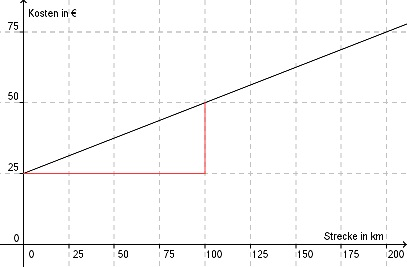

Lineare Funktionen Aufgabe 9 Die Gerade zeigt die Abhängigkeit der Kosten y für einen Leihwagen von der gefahrenen Strecke x. Bestimmen Sie die Funktionsgleichung der Geraden.  Die Koordinaten zweier Punkte am roten Steigungsdreieck abgelesen: P1 (100|50) x1 y1 P2 (0|25) x2 y2 y2 - y1 25 - 50 -25 m = --------- = --------- = ------- = 0,25 x2 - x1 0 - 100 -100 b = 25 (Schnittpunkt mit der y-Achse) y = 0,25x + 25